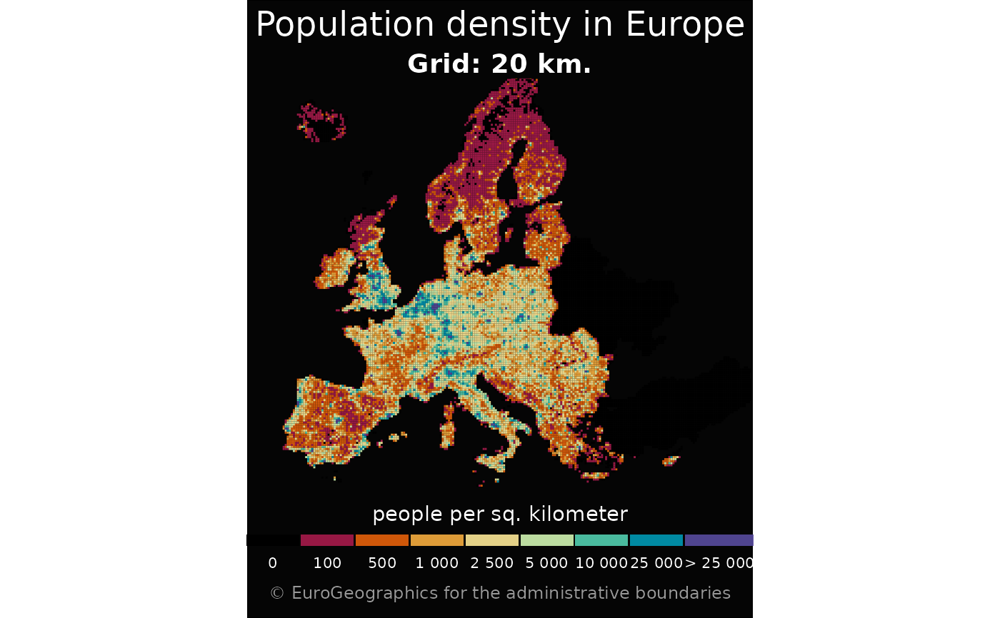

These datasets contain grid cells covering the European land territory, for various resolutions from 1km to 100km. Base statistics such as population figures are provided for these cells.
Source
https://ec.europa.eu/eurostat/web/gisco/geodata/grids.
There are specific downloading provisions, please see https://ec.europa.eu/eurostat/web/gisco/geodata/grids.
Arguments
- resolution
Resolution of the grid cells in km. Available values are
"1","2","5","10","20","50","100". See Details.- spatialtype
Select one of
"REGION"or"POINT".- cache_dir
character string. A path to a cache directory. See Caching strategies section in
gisco_set_cache_dir().- update_cache
logical. Should the cached file be refreshed? Default is
FALSE. When set toTRUEit would force a new download.- verbose
logical. If
TRUEdisplays informational messages.
Value
A sf object.
Details
Files are distributed on EPSG:3035.
The file sizes range from 428 KB (resolution = 100)
to 1.7 GB (resolution = 1).
Examples
grid <- gisco_get_grid(resolution = 20)
# If downloaded correctly proceed
if (!is.null(grid)) {
library(dplyr)
grid <- grid |>
mutate(popdens = TOT_P_2021 / 20)
breaks <- c(0, 0.1, 100, 500, 1000, 5000, 10000, Inf)
# Cut groups
grid <- grid |>
mutate(popdens_cut = cut(popdens,
breaks = breaks,
include.lowest = TRUE
))
cut_labs <- prettyNum(breaks, big.mark = " ")[-1]
cut_labs[1] <- "0"
cut_labs[7] <- "> 10 000"
pal <- c("black", hcl.colors(length(breaks) - 2,
palette = "Spectral",
alpha = 0.9
))
library(ggplot2)
ggplot(grid) +
geom_sf(aes(fill = popdens_cut), color = NA, linewidth = 0) +
coord_sf(
xlim = c(2500000, 7000000),
ylim = c(1500000, 5200000)
) +
scale_fill_manual(
values = pal, na.value = "black",
name = "people per sq. kilometer",
labels = cut_labs,
guide = guide_legend(
direction = "horizontal",
nrow = 1
)
) +
theme_void() +
labs(
title = "Population density in Europe",
subtitle = "Grid: 20 km.",
caption = gisco_attributions()
) +
theme(
text = element_text(colour = "white"),
plot.background = element_rect(fill = "grey2"),
plot.title = element_text(hjust = 0.5),
plot.subtitle = element_text(hjust = 0.5, face = "bold"),
plot.caption = element_text(
color = "grey60", hjust = 0.5, vjust = 0,
margin = margin(t = 5, b = 10)
),
legend.position = "bottom",
legend.title.position = "top",
legend.text.position = "bottom",
legend.key.height = unit(0.5, "lines"),
legend.key.width = unit(1, "lines")
)
}
